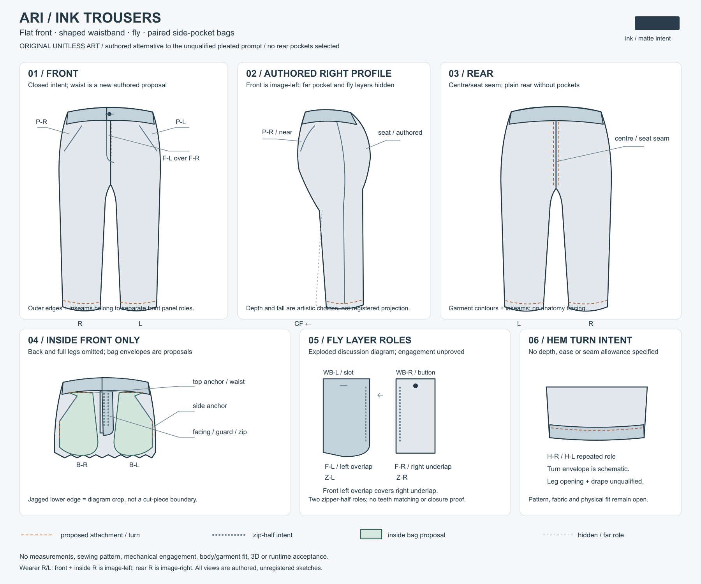

Ari / first-image promotion refused
All three top captions cross trouser hem contours. Whole technical-art appearance fails; preserve this sole unchanged image as evidence. No retake or board/checklist promotion. Pattern, sewing, mechanics, body/garment fit and runtime remain open.
Receipt · Held artist notes · Exact editable SVG · Complete JSON · Fresh plan · Earlier stopped source
